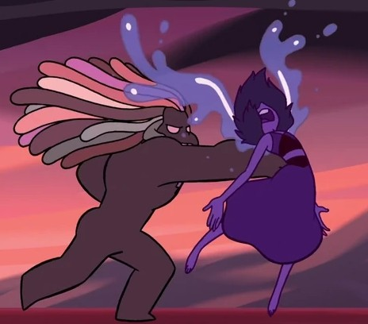

A História de Lapis
A história de Lapis Lazuli em Steven Universe é marcada por sua luta contra o trauma do Planeta Terra e sua busca por amizade e compreensão. Ela é uma personagem complexa, que enfrenta desafios emocionais e sociais, enquanto se torna uma Crystal Gem e se envolve em várias aventuras com Steven e as outras Gems. Lapis é conhecida por sua habilidade de manipular a água com a mente e por sua capacidade de memorização, que a torna uma figura central na série.
Links úteis:
Passado
Lapis Lazuli estava passando pela Terra durante um curto período quando ficou presa nela, meio à rebelião, Lapis foi atacada e teve sua pedra presa em um espelho ao ser confundida com uma rebelde. Os soldados do Planeta Natal Gem usaram-a para descobrir a base e o líder dos rebeldes, embora sem sucesso. Quando perceberam que os rebeldes estavam ganhando a guerra, os soldados do Planeta Natal foram evacuados, em meio a multidão, o espelho caiu e Lapis teve sua pedra quebrada. Pérola o encontrou e o armazenou em sua pedra, apenas pensando se tratar de um artefato que armazenava informações.
Zona Malaquita

No sonho, Steven e Pérola estão em sua casa, e Pérola fica entusiasmada com Steven, que está se preparando para seu primeiro baile da escola, na companhia de Connie. Ametista desce as escadas em um skate, e Pérola persegue Ametista fora da tela. A campainha toca, e Steven atende a porta e vê Garnet, que exclama "Chille Tid!" Steven explica a Garnet que ele vai a um baile com Connie, em seguida a campainha toca novamente.
Steven presume que é Connie. Quando ele abre a porta, ele vê Lapis chorando muito, sendo isso suficiente para inundar o local. Em seguida, os dois são transferidos para a Zona de Malaquita.Steven usa sua recém descoberta telepatia, por meio do sonho, para entrar na Zona de Malaquita, onde encontra Lapis lutando para continuar com o controle de Malaquita e assim manter Jasper presa. Lapis acaba se desconcentrando e Jasper toma o controle temporariamente, mas logo perde ao ver Steven.
Rebelião

A Rebelião foi um conflito marcante para o Planeta Natal e para a série. Quando o Império Gem tentou transformar a Terra em uma colônia, Rose Quartz e suas aliadas começaram uma rebelião para que o processo da colônia acabasse. Após anos de conflito, as rebeldes venceram e expulsaram as Gems do Planeta Natal da Terra, assim como foram proibidas de voltar para o Planeta Natal.